DistServe：拆分预填充与解码，以 goodput 为目标的大语言模型推理服务
DistServe: Disaggregating Prefill and Decoding for Goodput-optimized Large Language Model Serving
阅读状态、进度与收藏只保存在你的浏览器里。
逐节精读
这部分按论文的章节顺序，用本站自己的话把整篇论文从头讲一遍。读懂某个概念需要的背景知识，会在第一次用到它之前单独讲清楚（青色框）。每个结论都尽量说出“因为什么、所以什么”。论文以 CC BY-SA 4.0 许可发布，所以原图直接放在讲到它的地方，并说明这张图怎么看；原图没画到的概念，用本站的示意图补上。标“推算”的数字是本站根据论文数据或公开配置算出来的，标“从图上读出”的数字是对原图的目测，二者都不是论文原话。每节末尾有英文原文的链接。
0 导读：这篇论文解决什么问题
大模型回答一个请求分两步。第一步叫 prefill（预填充）：把用户的整段输入一次性算完，得到第一个输出 token。第二步叫 decode（解码）：之后每一步只生成一个 token，一直到结束。用户感受到的速度也分成两个数：等第一个字出来要多久（TTFT），之后每个字隔多久出来一个（TPOT）。不同的应用对这两个数有不同的要求，这些要求叫 SLO。
当时几乎所有推理系统，包括 vLLM，都把这两步放在同一组 GPU 上，并且把不同请求的 prefill 和 decode 拼在同一个批里一起算，目标是让 GPU 每秒产出尽可能多的 token。这篇论文指出，一旦对 TTFT 和 TPOT 都有严格要求，这种做法就会出问题：一来，prefill 一步要算很久，它插进来时，同一张卡上正在解码的请求都得停下来等，反过来解码也会拖慢 prefill，两边互相干扰；二来，两个阶段被绑在同一组 GPU 上，只能用同一种并行方式和同样多的卡，而它们的计算特点完全不同，各自最合适的配置并不一样。结果是，为了同时满足两个要求，服务商只能多买卡。
论文的办法很直接：把 prefill 和 decode 拆到不同的 GPU 上，各自选最合适的并行方式和卡数，中间把 KV 缓存从 prefill 卡传给 decode 卡。衡量好坏的指标也换了：不再是“每秒产出多少 token”（吞吐量），而是“在至少 90% 的请求同时满足 TTFT 和 TPOT 要求的前提下，每张 GPU 每秒最多能接多少请求”，作者叫它 per-GPU goodput。为了自动找到最好的拆分方案，DistServe 用一个模拟器去搜索两边的并行配置和卡数，并且按集群网络带宽的高低给出两种放置算法，让 KV 传输尽量走机内的高速链路。在 OPT-13B 到 OPT-175B 的实验里，DistServe 每张卡能接的请求是 vLLM 的 2.0–5.7 倍、DeepSpeed-MII 的 1.6–7.4 倍；最极端的一组实验里，它能扛住的延迟要求比 vLLM 严 12.6 倍。具体倍数取决于应用、模型和对比对象。
读完这部分，你应该能回答这几个问题：
- prefill 为什么受算力限制，decode 为什么受显存带宽限制？
- TTFT、TPOT、SLO、goodput 分别是什么？goodput 和吞吐量差在哪？
- 两个阶段放在同一组 GPU 上，具体是怎么互相拖累的？chunked prefill 为什么不能根治？
- 拆开之后，prefill 和 decode 各自该怎么组批、用哪种并行？排队论在这里说明了什么？
- KV 缓存要传多少字节、要多快的网络？网络慢的时候 DistServe 怎么放置实例？
- “7.4 倍”“12.6 倍”分别是在什么条件下、和谁比出来的？什么时候不该拆？
1 引言：同时满足两个延迟要求，为什么这么贵
语言模型一个 token 一个 token 地生成文字（详细原理见 vLLM 精读 §2.2）。对一个请求来说：
- prefill 阶段：用户的输入（prompt）全部已知，模型一次就能把所有输入 token 同时算完，顺便算出第一个输出 token。这一步还会把每个输入 token 在每一层的 key 和 value 存下来，叫 KV 缓存，后面每一步都要用。
- decode 阶段：从第二个输出 token 开始，每一步只输入上一步刚生成的那个 token，读取之前所有 token 的 KV 缓存做注意力，生成下一个 token，如此反复，直到生成结束符。
两个阶段对应两个延迟指标。TTFT（time to first token，首 token 延迟）是请求从到达到拿到第一个输出 token 的时间，等于排队时间加上 prefill 的时间。TPOT（time per output token，每输出 token 时间）是第一个 token 之后，平均每生成一个 token 花的时间。论文脚注给出的关系是：一个请求的总延迟 = TTFT + TPOT × decode 阶段生成的 token 数。
不同应用看重的不一样。聊天机器人要“一问就有反应”，所以 TTFT 要小；至于 TPOT，只要出字速度比人读得快就够了（论文用的参照是每分钟 250 个英文单词，约每秒 4 个词）。文档摘要则相反：用户可以接受先等一会儿，但希望摘要整段尽快写完，所以更看重 TPOT。
SLO（service-level objective，服务水平目标）就是服务商给自己定的延迟要求，比如“TTFT 不超过 0.25 秒，TPOT 不超过 0.1 秒”。一个请求只有两个要求都满足才算达标。所有请求里达标的比例叫 SLO 达标率（SLO attainment）。实际服务不可能让每个请求都达标，所以通常定一个达标率目标，比如 90%：只要 90% 的请求达标就算合格。图里常见的“P90 TTFT”就是把所有请求的 TTFT 从小到大排好，第 90% 位置上的那个值；P90 TTFT 低于要求，就说明至少 90% 的请求在 TTFT 这一项上达标。
有了这两个概念，就可以说清楚论文要优化的指标。服务商关心的是“每个请求花多少钱”，而钱主要花在 GPU 上。所以论文定义 per-GPU goodput：在满足 SLO 达标率目标（比如 90%）的前提下，系统能承受的最大请求速率，再除以用到的 GPU 数。每张卡的 goodput 越高，每个请求的成本就越低。
吞吐量是系统每秒处理完的 token 数（或请求数），它不管这些请求等了多久。goodput 的意思是“有效的吞吐”：只有在延迟达标的前提下处理的请求才算数。DistServe 的具体定义是：逐渐加大请求速率，找出达标率仍不低于目标的最大速率。下面用一组虚构的数字说明（仅用来解释定义，不是论文数据）：
| 请求速率（个/秒） | 1 | 2 | 3 | 4 | 5 | 6 |
|---|---|---|---|---|---|---|
| 系统 A（1 张卡）达标率 | 99% | 93% | 80% | 70% | — | — |
| 系统 B（2 张卡）达标率 | 100% | 100% | 99% | 97% | 92% | 75% |
只看吞吐量，系统 A 在每秒 4 个请求时照样能把请求全部处理完，看起来很好；但这时 30% 的请求延迟超标，对用户来说是“卡”。按 90% 的目标，A 的 goodput 是 2 个/秒（3 个/秒时已降到 80%），每张卡 2 个/秒；B 的 goodput 是 5 个/秒，每张卡 2.5 个/秒。所以 B 虽然用了两倍的卡，按每张卡算反而更划算。注意 goodput 不是某一个速率下测出来的数，而是要把速率从低到高扫一遍、找到达标率跌破目标的那个位置。
论文用图 1 展示了现有系统在这个指标下的差距。实验是 13B 模型在 1 张 A100-80GB 上运行，输入固定 512 个 token、输出 64 个 token，模拟“给一篇文章写一段短摘要”。
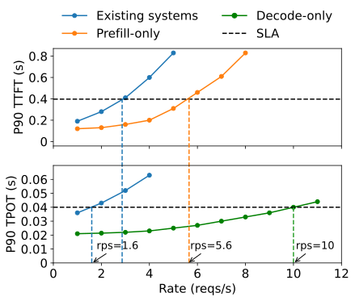
从图 1 可以算出拆分的收益。只做 prefill 的卡每张能扛 5.6 个/秒，只做 decode 的卡每张能扛 10 个/秒。如果用 2 张卡做 prefill（合计 11.2 个/秒）、1 张卡做 decode（10 个/秒），整个系统能扛 10 个/秒（受 decode 那张卡限制），平均每张卡 3.3 个/秒，是现有系统 1.6 个/秒的 2.1 倍。这是理想估算：它假设 KV 传输不花时间，请求完全均匀，后面几节会逐一检查这些假设。
作者认为差距来自两点，后面的整篇论文都围绕它们展开：
- 两个阶段互相干扰。prefill 一步比 decode 一步慢得多。两者拼在同一批里时，这一批里所有 decode 请求都得陪着 prefill 算完，TPOT 被拉长；反过来，批里多了 decode 也会让 prefill 变慢，TTFT 变长。就算不拼批、而是轮流执行，正在排队的 decode 也得等 prefill 跑完，反之亦然。优先照顾哪一边，另一边就会超标。
- 资源和并行方式被绑在一起。两个阶段在延迟要求和最适合的并行方式上都不一样（第 3 节详细分析），但放在同一组 GPU 上，就只能用同一种配置，没法各取所需。
于是论文提出把两个阶段拆到不同的 GPU 上。拆开之后，干扰自然消失；每个阶段可以按自己的延迟要求单独决定用几张卡、怎么并行。代价是 KV 缓存要在 GPU 之间传一次，论文会说明在现代 GPU 集群里这笔开销不大。论文列出的贡献有三条：指出干扰和资源耦合这两个问题并提出拆分；设计自动选择最优放置方案的算法；用真实负载做全面评测。
2 背景与动机：两个阶段算的东西有什么不同，放在一起为什么出问题
2.1 大模型推理：一个吃算力，一个吃带宽
GPU 做一次计算，要先把数据从显存（HBM）搬到芯片上的计算单元。所以一个操作要花多少时间，取决于两件事里更慢的那一件：算要多久（计算量 ÷ 峰值算力），搬要多久（搬运的字节数 ÷ 显存带宽）。两者的比值，“每搬 1 字节数据做多少次浮点运算”，叫算术强度（FLOP/byte）。
以 A100 为例：FP16 矩阵乘的峰值约 312 TFLOPS，显存带宽约 2.0 TB/s，两者相除约 156 FLOP/byte（论文附录 A 也用 156 作为 A100-80GB 的分界）。一个操作的算术强度低于 156，就是带宽受限：计算单元在等数据；高于 156，就是算力受限：数据来得及，计算单元满负荷。把“能达到的算力 = min(峰值算力, 带宽 × 算术强度)”画成一条先斜后平的折线，就是 roofline（屋顶线）图，拐点叫脊点。
现在看模型里最主要的计算：一个线性层，权重矩阵是 \(h\times h'\)（FP16，共 \(2hh'\) 字节），同时作用在 \(t\) 个 token 上。计算量约 \(2t\,h\,h'\) 次浮点运算，搬运的主要是权重 \(2hh'\) 字节，所以算术强度约等于 \(t\)，也就是一次同时处理的 token 数。
- prefill：一个 512 token 的 prompt 一次处理 512 个 token，算术强度约 512，远高于 156，属于算力受限。
- decode：每个请求每步只处理 1 个 token。批里有 \(B\) 个请求，算术强度就约是 \(B\)。\(B\) 不到 156 时（实际服务中常见），属于带宽受限：每一步都得把整份权重读一遍，却只做很少的计算。
下面这个交互图可以直接验证这一点：选 A100 SXM 和 OPT-13B，把 batch 设为 1、上下文设为 512，看 prefill 和 decode 两个点分别落在脊点的哪一边；再把 batch 往上调，看 decode 的点怎样向右移动。
论文 §2.1 的说法与此一致：对 13B 模型，一个 512 token 的 prefill 就已经让 A100 接近算力受限；decode 每步只处理一个新 token，却要读和 prefill 差不多多的数据（整份权重），所以受显存带宽限制。两个阶段生成的 KV 缓存都要存在显存里，后面的 decode 要反复读取。正因为两个阶段共用权重和 KV 缓存，绝大多数推理引擎才自然地把它们放在同一组 GPU 上。
2.2 现有的优化手段：连续批处理与模型并行
连续批处理。Orca 提出、vLLM 沿用的连续批处理（continuous batching，也叫迭代级调度）每生成一个 token 就重新组一次批：生成完的请求立刻离开，新到的请求下一步就能加入，新请求的 prefill 和老请求的 decode 被拼在同一批里一起算（原理见 vLLM 精读 §2.3）。这样做能把 GPU 用满，让每秒产出的 token 数最大化。但它的目标是吞吐量，而不是两个延迟要求，所以会在 TTFT 和 TPOT 之间产生取舍（§2.3 详述）。它的改进版 chunked prefill（分块预填充）把长 prompt 切成几块，每次只算一块，同时捎带一些 decode 请求，试图兼顾两边；作者认为它本质上是拿 TTFT 换 TPOT，并不能消除干扰。
模型太大、一张卡放不下，或者想让它跑得更快时，要把模型拆到多张 GPU 上。论文沿用 Alpa 的说法，分成两类：
- 算子内并行（intra-operator，最常见的是 Megatron-LM 的张量并行，TP）：把每一个大的矩阵乘拆开，几张卡各算一部分，每层算完后用 all-reduce 把结果合起来。每一层都要通信，通信量大，所以需要 NVLink 这类高速互联。好处是一个请求的计算被几张卡分担，执行时间变短，延迟降低。
- 算子间并行（inter-operator，即流水线并行，PP）：把模型的层按顺序切成几段（stage），每张卡负责一段，请求像在流水线上一样依次经过各段。段与段之间只传一份激活值，通信很少。一个请求还是要走完全部层，执行时间不会缩短（反而因为段间通信略长）；但流水线上可以同时有多个请求处在不同的段，所以系统每秒能接的请求数随卡数线性增长。
打个比方：一辆车要组装，张量并行是让四个工人同时在这一辆车上干活，车装得更快，但工人之间要不停地沟通；流水线并行是把装配线分成四个工位，每辆车装好的时间没变，但同一时刻线上有四辆车，每小时出的车多了。还有第三种扩容方式：复制，直接多部署几份完整的模型，每份独立接请求，容量也线性增长。
论文在这里还提出一个后面会用到的观察：模型并行除了扩大容量，还能减少排队时间，因为每个请求执行得越快（或流水线接请求的间隔越短），后面的请求等得就越少。第 3 节会用排队论把这一点算清楚。这些并行方式组合起来，形成一个很大的配置空间，需要按应用的延迟要求仔细权衡。
2.3 问题与机会：干扰、调度失灵、资源耦合
问题一：prefill 和 decode 互相干扰。图 2 量化了干扰有多大：拿一批正在 decode 的请求，测一步要多久；再往这一批里加一个 prefill，看一步变成多久。
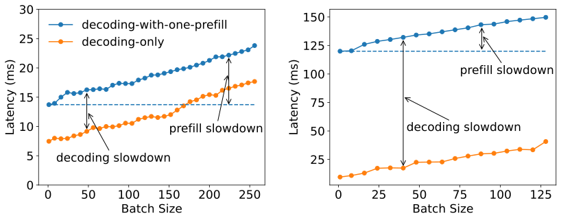
这种干扰对 TPOT 的影响可以粗略估算一下（推算，只为说明量级）。假设一张卡上 prefill 和 decode 轮流执行，每秒有 \(R\) 个新请求，每个 prefill 要 \(T_{p}\) 秒，那么每秒有 \(R\,T_{p}\) 的时间被 prefill 占掉，decode 只能用剩下的 \(1-R\,T_{p}\)。原来 decode 一步要 \(T_{d}\) 秒，现在平均每个 token 要约 \(T_{d}/(1-R\,T_{p})\) 秒。用图 2(b) 的 \(T_{p}\approx 0.12\) 秒：每秒 2 个请求时，TPOT 变成原来的约 1.3 倍；每秒 4 个请求时，约 1.9 倍。请求越多，TPOT 越差，而这时 GPU 并没有闲着。这和图 1 里蓝线的 TPOT 随请求速率不断上升的趋势是一致的。
| ① 混合部署：新请求 C 的 prefill 一插进来，正在解码的 A、B 全部停下 | ||||||||||||||
| 请求 A（解码中） | ||||||||||||||
| 请求 B（解码中） | ||||||||||||||
| 请求 C（新到） | ||||||||||||||
| ② 分离部署：prefill 在自己的卡上算，A、B 不受影响，C 多一次 KV 传输 | ||||||||||||||
| 请求 A（decode 卡） | ||||||||||||||
| 请求 B（decode 卡） | ||||||||||||||
| 请求 C（prefill 卡） | ||||||||||||||
| 请求 C（decode 卡） | KV | |||||||||||||
chunked prefill 能缓解，但除不掉。Sarathi 和 DeepSpeed-MII 采用的 chunked prefill（分块预填充）把长 prompt 切成几块，每次迭代只算一块，再把一些 decode 请求“捎带”（piggyback）进同一批。这样每次迭代的时长有了上限，decode 不会被一个超长 prefill 卡住太久。但作者指出它有两个绕不开的代价：
- 块大小怎么选都不理想。块切得比“刚好把 GPU 算满”的长度小很多，prefill 就得和 decode 分享 GPU，自己又占不满，执行时间变长；块切得接近算满 GPU 的长度，批里留给 decode 的位置就所剩无几，捎带的机会变少。
- 重复读 KV。算第 \(k\) 块时，注意力要读前面 \(k-1\) 块已经算好的 KV 缓存。把 prompt 均分成 \(N\) 块，总共要读 \(1+2+\dots+N=O(N^{2})\) 块的 KV，而不分块时只需 \(O(N)\)。例如一个 2048 token 的 prompt 切成 4 块，每块 512：四块分别要读 1、2、3、4 块的 KV（含自己），总共 10 块，是不分块时 4 块的 2.5 倍（推算）。上下文越长，这笔额外的显存读取越多。
问题二：分开调度也没用。如果不把两种任务拼进同一批，而是轮流执行，decode 任务就得排队等正在执行的 prefill；而只含 decode 的批又往往用不满 GPU。无论优先哪一边，另一边的延迟都会变差，优先级调度解决不了问题。
问题三：资源和并行方式被耦合。放在同一组 GPU 上，两个阶段只能用同一套并行配置。prefill 算力受限，TTFT 要求紧时更适合多用张量并行来缩短执行时间；decode 的最优配置则取决于正在跑的批有多大。现有系统只能按两个要求中更苛刻的那一个来选配置，对另一个阶段往往不是最优，结果就是多配资源。
机会：拆开。论文把“管理一份完整模型权重的一组资源”叫一个实例（instance），一个实例可以包含多张 GPU（用了模型并行时）。拆分后，有专门的 prefill 实例和 decode 实例，各自持有一份权重。请求先进 prefill 实例，只做 prefill、生成第一个 token，再把 KV 缓存交给一个 decode 实例，由后者完成剩下的生成。因为 decode 单独跑时 GPU 利用率低，可以让多个 prefill 实例对应一个 decode 实例，把 decode 的批攒大，提高利用率。拆开之后，干扰自然消失，每种实例只盯着自己的目标（TTFT 或 TPOT）选卡数和并行方式，从而提高整个系统每张卡的 goodput。
- 图 2 的绝对数值不宜和论文其他图直接对比。按显存带宽推算，13B 的 FP16 模型权重约 26 GB，在单张 A100-80GB（约 2.0 TB/s）上 decode 一步至少要约 13 毫秒；图 2(a) 小批量的 decode 只要约 7.5 毫秒，与图 1 中单卡只做 decode、负载很轻时约 21 毫秒的 TPOT 也不一致。论文没有交代图 2 的测量配置（卡数或卡型可能不同），所以这张图只宜看“加一个 prefill 后慢了多少”的相对关系（本站推算与观察）。
- 本文对 chunked prefill 的批评代表了本文作者的看法。同年 OSDI 2024 上的 Sarathi-Serve 正是 chunked prefill 路线的代表作，它选择了另一种取舍：在单组 GPU 上控制每次迭代的时长，不需要跨 GPU 传 KV。两条路线的比较见 Orca / Sarathi-Serve 拆解页。
3 权衡分析：拆开之后，每个阶段该怎么组批、怎么并行
3.1 prefill 实例：批不宜大，并行方式要看负载
prefill 实例的目标是：在给定的请求到达速率下，用最少的资源满足 TTFT 要求。
组批策略。prefill 是算力受限的，这决定了它不适合组大批。
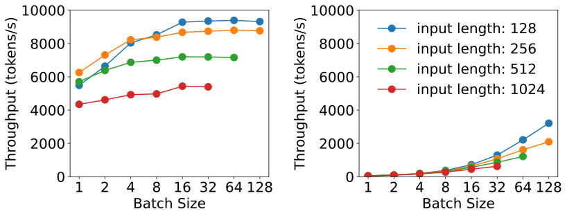
用图 3(a) 的数字算一下组批的得失（推算）。输入 512 个 token 的请求单独做 prefill，约 \(512/5700\approx 0.09\) 秒；16 个一起做，吞吐量只提高到约 7,200 token/s，但这一批要约 \(16\times 512/7200\approx 1.14\) 秒才算完，批里每个请求都要等这么久才能拿到第一个 token。用 26% 的吞吐提升换十几倍的 TTFT，显然不值。换个角度验证 13B 模型在顶点时的算力利用率：每个 token 的 prefill 计算量约为 \(2\times 13\times 10^{9}\) 次浮点运算，9,300 token/s 相当于约 242 TFLOPS，已是 A100 峰值 312 TFLOPS 的近八成（推算）。
所以论文的做法是：针对具体的模型和 GPU 事先测出一个长度阈值 \(L_{m}\)，即刚好能把 GPU 算满的输入长度。请求的输入短于 \(L_{m}\) 时，才值得把几个请求拼成一批；长于 \(L_{m}\) 就单独算。实际用户的 prompt 平均有几百个 token，所以 prefill 实例的批通常很小。
并行方式：用排队论看清楚。作者在 2 张 A100 上部署 66B 模型，只做 prefill，分别用算子间并行（流水线）和算子内并行（张量并行），输入固定 512 token，请求按泊松过程到达，测平均 TTFT 随请求速率的变化（图 4a）。结果是：请求少的时候算子内并行更好，请求多了以后算子间并行反超。为什么？拆分后的 prefill 实例正好可以用一个经典的排队模型来解释。
排队论用三个字母描述一个排队系统。第一个字母是到达方式，M 表示请求按泊松过程随机到达（大量用户各自随机发请求时最常用的模型，平均每秒 \(R\) 个，间隔有时密有时疏）；第二个字母是服务时间，D 表示每个请求的处理时间是固定的 \(D\)（输入长度都一样时，prefill 时间就是固定的）；最后的 1 表示只有一个服务台，一次处理一个请求，先来先服务（FCFS）。拆分后的 prefill 实例正好符合这个描述：一个请求就能把 GPU 算满，所以一次只处理一个，不组批。
记 \(\rho = RD\) 为利用率，即服务台忙碌的时间比例，它必须小于 1，否则队伍会无限变长。M/D/1 的平均等待时间有现成的闭式解，于是平均 TTFT 是：
第一项是执行时间，第二项是排队时间。直觉上：利用率 \(RD\) 越接近 1，分母越接近 0，排队时间急剧上升。这就是“延迟—速率曲线”在接近容量时突然拐上去的原因。
在这个模型上加入两种并行（都用 2 张卡）：
- 2 段流水线（算子间）。一个请求走完两段的总时间 \(D_{s}\) 基本不变，仍约为 \(D\)（段间只传激活，通信可忽略）；但最慢的一段只需 \(D_{m}\approx D/2\)，流水线每隔 \(D_{m}\) 就能接一个新请求。所以执行时间是 \(D\)，排队却像一个服务时间为 \(D/2\) 的 M/D/1：
$$\overline{\mathrm{TTFT}}_{\text{inter}} = D_{s} + \frac{R D_{m}^{2}}{2(1-R D_{m})} = D + \frac{R D^{2}}{4(2-RD)}$$
- 2 路张量并行（算子内）。两张卡一起算一个请求，执行时间缩短为 \(D/K\)。这里 \(K\) 是加速系数，\(1\lt K\lt 2\)：通信开销让两张卡达不到理想的 2 倍。一次仍只处理一个请求，所以它是一个服务时间为 \(D/K\) 的 M/D/1：
$$\overline{\mathrm{TTFT}}_{\text{intra}} = \frac{D}{K} + \frac{R D^{2}}{2K(K-RD)}$$
对比两个式子：请求少时，排队项很小，TTFT 主要由第一项决定，张量并行把执行时间缩短到 \(D/K\)，所以更好；请求多时，排队项占主导，流水线的“接单间隔”是 \(D/2\)，比张量并行的 \(D/K\) 更短，能扛的速率上限也更高（流水线约 \(2/D\)，张量并行约 \(K/D\)），所以流水线反超。
代入一组数字看得更清楚（推算，参数是本站为了说明而取的）：设单卡 prefill 时间 \(D=0.2\) 秒，张量并行的加速系数 \(K=1.6\)。
从这张图可以读出三件事（全部是推算）。第一，每秒 1 个请求时，张量并行的平均 TTFT 约 0.134 秒，流水线约 0.206 秒，张量并行明显更好。第二，两条曲线在每秒约 5.5 个请求处相交，之后流水线更好；每秒 7 个请求时，流水线约 0.32 秒，张量并行已涨到约 0.56 秒。第三，延迟要求本身会改变答案：如果要求平均 TTFT 不超过 0.15 秒，流水线连空载时的 0.2 秒都做不到，只有张量并行能用，最多扛约每秒 2.3 个请求；如果要求放宽到 0.3 秒，流水线能扛约 6.7 个，张量并行约 5.9 个，流水线反而胜出。这正是论文的结论：TTFT 要求越紧，算子内并行越有优势。
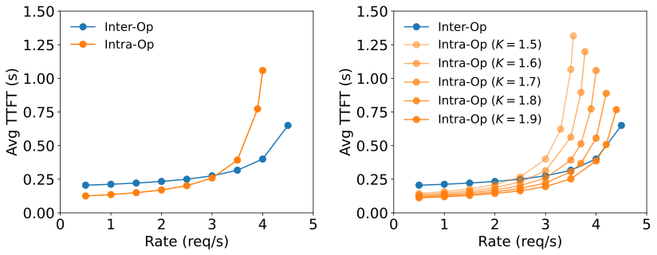
\(K\) 的大小取决于输入长度、模型结构、卡间带宽和放置位置。比如卡间只有 PCIe 而没有 NVLink 时，张量并行每层的 all-reduce 会很慢，\(K\) 会明显变小。所以“prefill 该用哪种并行”没有统一答案，要综合请求速率、TTFT 要求和 \(K\) 来定，第 4 节的算法就是在自动做这个决定。
3.2 decode 实例：批要大，严格的 TPOT 才需要张量并行
decode 实例接收 prefill 实例送来的 KV 缓存和第一个 token，然后一个一个地生成后续 token。它的目标是：用最少的资源满足 TPOT 要求。
组批策略。单个 decode 任务严重受带宽限制，所以组大批是提高 GPU 利用率的关键（图 3b）。从图 3(b) 读出，输入 128 时批大小 128 约 3,200 token/s，相当于一步约 40 毫秒；而图 1 里一张只做 decode 的卡在负载很轻时，TPOT 约 21 毫秒。两者条件不完全相同，但量级说明：批里的请求多了一百多倍，一步的时间只增加了约一倍（从图上读出后推算）。但在混合部署的系统里，decode 的批很难开大：请求速率越高，prefill 任务越多；如果优先 prefill 来保 TTFT，decode 就被挤占，TPOT 变差。拆分之后，可以让多个 prefill 实例给同一个 decode 实例供货，在专用的卡上攒出大批，而不牺牲 TPOT。
批能开多大，最终受显存容量限制，因为批里每个请求的 KV 缓存都要放在显存里。估算一下（推算）：OPT-13B 每个 token 的 KV 缓存是 800 KB（\(2\times 40\ \text{层}\times 5120\times 2\ \text{字节}\)），一张 80 GB 的卡放下 26 GB 权重后还剩约 54 GB；按 ShareGPT 平均每个请求约 955 个 token（输入 755.5 + 输出 200.3，见 §6.1）计算，每个请求约 0.78 GB，一张卡同时最多放下约 69 个请求。要把批开得更大，就得用模型并行把权重分摊到更多卡上腾出显存，或者用 PagedAttention、GQA 这类节省 KV 显存的技术。
prefill 实例像一个一次只服务一位顾客的窗口，适合用 M/D/1 描述；decode 实例更像一个可以同时容纳很多人的大厅：请求进来就加入正在跑的批，生成完就离开。描述这类系统最好用的工具是 Little 定律：系统里平均同时有多少个请求 = 到达速率 × 每个请求平均停留的时间。对 decode 实例来说，停留时间约等于“输出 token 数 × TPOT”。
代入数字（推算）：ShareGPT 平均输出约 200 个 token，假设 TPOT 为 0.05 秒，一个请求要在 decode 实例里停留约 10 秒。如果每秒有 5 个请求从 prefill 实例过来，decode 实例里平均同时就有约 50 个请求，KV 缓存约 \(50\times 0.78\approx 39\) GB，上面那张卡放得下；每秒 7 个请求时，同时约 70 个，超过了约 69 个的容量。从这一刻起，新来的请求只能在 decode 实例门口排队（§4.3 的“decode 排队”），TPOT 也会因为批变大而上升。所以 decode 实例的容量上限，常常不是由算力决定，而是由显存能放下多少个请求的 KV 决定。
并行方式。当 decode 的批大到接近算力受限时，它的计算特点就开始像 prefill 了。作者测了大批量下不同并行度的效果（图 5）。
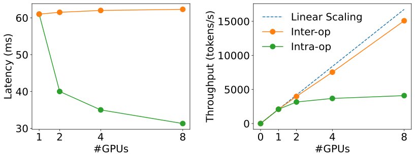
把图 5 换算成“每张卡的产出”更能看出取舍（推算）：8 卡张量并行时，TPOT 约 31 毫秒，每张卡约 500 token/s；8 卡流水线时，TPOT 约 61 毫秒，每张卡约 1,900 token/s，几乎是前者的 4 倍。所以结论是：只有当 TPOT 要求紧到单卡做不到时，才需要张量并行来压低单步延迟；满足了延迟要求之后，再要扩容就用流水线，因为它的吞吐几乎线性增长。张量并行降低延迟的收益递减，原因是卡越多通信越多，每张卡分到的矩阵越小、利用率越低。
另外，模型能放进一张卡时，复制（多部署几份）对 prefill 和 decode 都是很有竞争力的选项：它让容量线性增长，还能减少排队，因为把请求平均分给 \(N\) 份副本，相当于把公式 (1) 里的 \(R\) 换成 \(R/N\)。代价是每份副本都要在显存里放一份权重。
3.3 实际部署的两个麻烦：长度不一，以及 KV 要传过去
请求长度不一。前面的分析假设所有请求的输入一样长。真实负载里长度参差不齐，这会给用流水线并行的 prefill 实例带来流水线气泡：长请求在某一段上耗时长，后面跟着的短请求只能等，有的段空转。这会让实际表现偏离 M/D/1 模型的预测。论文的对策是：第 4 节的算法按真实的长度分布去搜索并行配置，再用调度尽量减少气泡（§4.3）。
KV 传输的开销。拆分后，每个请求的 KV 缓存都要从 prefill 实例传到 decode 实例。这有多大？先看公式：标准多头注意力（MHA）的模型，每个 token 在每一层存一个 key 向量和一个 value 向量，每个向量长度等于隐藏维度 \(h\)：
代入 OPT-66B（\(L=64\)，\(h=9216\)，来自其公开配置）：每个 token 约 2.36 MB（2.25 MiB）。一个 512 token 的请求就是约 1.21 GB，论文写作“约 1.13 GB”，那是按 \(2^{30}\) 字节为 1 GB 计的 1.125 GiB，两者是同一个量（推算）。如果平均每秒 10 个请求，就要每秒传约 11.3 GiB，论文换算为约 90 Gbps 的带宽，才能让传输“看不见”。
这个带宽在不同的链路上意味着什么？把一个请求的 1.21 GB 放到几种常见链路上（推算，按标称带宽、不计协议开销）：
还可以换一个与具体请求无关的角度（推算）：prefill 每个 token 的计算量约为 \(2\times\) 参数量，对 OPT 这类结构约 \(24Lh^{2}\) 次浮点运算；它产生的 KV 是 \(4Lh\) 字节。两者之比约为 \(1/(6h)\)。要让传输不慢于计算，链路带宽至少要达到“算力 ÷ \(6h\)”：
对 OPT-66B，一张 A100 满负荷时（\(F\approx 312\) TFLOPS）约需 5.6 GB/s，即约 45 Gbps；一台 8 卡机器全部做 prefill，就需要约 360 Gbps。论文测试床 25 Gbps 的跨节点网络差了一个数量级，而机内 NVLink 绰绰有余。这个式子还说明了三点：所需带宽与 prompt 长度无关（两边都随长度线性增长，这里忽略了注意力本身随长度平方增长的计算，算上它对长 prompt 更有利，§7 会用到）；隐藏维度 \(h\) 越大，越容易藏住传输；GQA 这类让多个注意力头共享 KV 的结构，会把 KV 字节数成倍压低。比如 Llama-3-70B（8 个 KV 头）每个 token 的 KV 只有 320 KB，按同样的算法一张 A100 只需约 0.7 GB/s（推算）。论文也提到，新一代采用 GQA/MQA 的模型传输压力更小，它特意选用 MHA 结构的 OPT 来做实验，就是为了给传输施加足够的压力。
下面的计算器可以换模型、换链路、改上下文长度，直接看一个请求的 KV 有多大、传一次要多久：
论文的结论是：很多为大模型准备的 GPU 集群配有 InfiniBand（例如 800 Gbps），传输开销可以忽略；跨节点带宽有限的集群，也可以依靠机内的 NVLink（A100 之间峰值 600 GB/s）。但后者给 prefill 和 decode 实例放在哪里加上了额外的约束，下一节专门处理。
- §3.1 的 M/D/1 分析建立在“输入长度一致、一个请求就能算满 GPU、按泊松过程到达”这几个简化假设上，算的是平均 TTFT，而实验衡量的是 90% 分位上的达标率。它的作用是给出定性规律，真正的配置选择靠第 4 节的模拟器搜索。
- “prefill 批要小”的前提是输入足够长。如果大多数 prompt 都很短（远小于 \(L_{m}\)），prefill 同样需要组批才能把 GPU 算满。
- KV 字节数公式只适用于 MHA。GQA、MQA、MLA 等结构每个 token 的 KV 要小得多，需要按各自的 KV 头数或压缩维度重新计算。
4 方法：自动搜索并行配置，按带宽放置实例
4.1 高带宽集群：两种实例各自优化，再按流量复制
如果集群配有 InfiniBand 这类高速跨节点网络，KV 传输开销可以忽略，prefill 和 decode 实例放在任意两台机器上都行。这时问题可以拆成两层：先分别为 prefill 实例和 decode 实例找出“每张卡 goodput 最高”的并行配置，再按目标流量复制足够多的份数。
难点在第一层：给定一个并行配置，它的 goodput 是多少？这需要知道在某个速率下，有多少比例的请求能满足 TTFT（或 TPOT）要求。由于真实负载的输入输出长度五花八门、到达时间不规则，没有简单的公式能算出来；在真机上一个个配置去测又太慢。所以作者建了一个模拟器：假设事先知道负载的到达过程和长度分布（短时间内的负载无法预测，但按小时或天的规律通常相当稳定），从历史请求记录里拟合出分布，再重新采样生成请求流，喂给模拟器算出达标率。对每个配置，再用二分搜索找出达标率不低于目标的最大速率，就是它的 goodput。
算法 1 的步骤可以这样读（\(N\) 是一个实例最多能用的节点数，\(M\) 是每个节点的 GPU 数，\(C\) 是单卡显存，\(R\) 是目标流量）：
- 枚举张量并行度 \(\text{intra\_op}\in\{1,\dots,M\}\)，以及流水线段数 \(\text{inter\_op}\in\{1,\dots,NM/\text{intra\_op}\}\)。
- 跳过放不下的配置：模型大小除以总卡数 \(\text{inter\_op}\times\text{intra\_op}\) 必须小于单卡显存 \(C\)。
- 对每个可行配置，用
simu_prefill模拟出它做 prefill 实例时的 goodput，用simu_decode模拟出它做 decode 实例时的 goodput。 - 两边分别保留“goodput ÷ 卡数”最大的配置，记为 \(\text{config}_{p}\) 和 \(\text{config}_{d}\)。
- 按目标流量复制：prefill 实例部署 \(n=\lceil R/\text{config}_{p}.\text{goodput}\rceil\) 个，decode 实例部署 \(m=\lceil R/\text{config}_{d}.\text{goodput}\rceil\) 个。
第 5 步就是 §1 那个“2 张 prefill 卡 + 1 张 decode 卡”的一般化。用图 1 的数字走一遍（推算，理想化）：如果每秒要接 \(R=20\) 个请求，prefill 单卡 goodput 5.6，需要 \(\lceil 20/5.6\rceil=4\) 张；decode 单卡 goodput 10，需要 2 张，共 6 张卡，每张卡约 3.3 个/秒。混合部署每张卡只有 1.6 个/秒，要 \(\lceil 20/1.6\rceil=13\) 张卡。注意 prefill 和 decode 的卡数比例是由两边各自的 goodput 决定的，负载变了（比如 prompt 变长），这个比例也会跟着变。
论文给出算法 1 的复杂度是 \(O(NM^{2})\)；在最大的设置下，求解时间不到 1.3 分钟（§6.5）。
模拟器怎么估计执行时间。模拟器的核心是一个延迟模型（论文附录 A），它统计 prefill 和 decode 的计算量和显存访问量，再用几个系数把它们换算成时间。记 \(h\) 为隐藏维度、\(m\) 为前馈层的中间维度（用张量并行时都除以并行度），一个批里有 \(B\) 个请求，输入长度分别为 \(l_{i}\)，\(t=\sum l_{i}\) 是批里的 token 总数，\(t_{2}=\sum l_{i}^{2}\) 是长度的平方和，\(b\) 是注意力内核的分块大小：
每一项都对应一个前面讲过的道理：prefill 的四个矩阵乘（QKV、注意力输出、前馈层两次）算术强度约为 \(t\)，是算力受限的，所以时间正比于计算量 \(4th^{2}+2thm\)；prefill 的注意力（用 FlashAttention 实现）在 A100 上是带宽受限的，访存量正比于每个请求长度的平方，所以正比于 \(t_{2}\)；\(C_{3}\) 吸收 Python 运行时等固定开销。decode 的四个矩阵乘批不大，是带宽受限的，主要时间花在读权重上，所以是一个与批大小无关的常数 \(4h^{2}+2hm\)；decode 的注意力要读批里所有请求的全部 KV，正比于上下文总长 \(t\)。系数 \(C_{1}\) 到 \(C_{5}\) 由对目标模型和 GPU 的实测加插值得到。因为神经网络的执行时间高度可预测，这个简单模型就足够准（§6.4 验证误差小于 2%）。
4.2 低带宽集群：同一段的 prefill 和 decode 放在同一台机器
很多真实集群里，机内 GPU 之间有 NVLink，机器之间的带宽却有限（论文的测试床就是跨节点 25 Gbps）。最直接的办法是让每一对 prefill 和 decode 实例都放在同一台机器上，KV 只走 NVLink。但大模型放不下：OPT-175B 的权重约 350 GB，一台 8 卡机器总共 \(8\times 80=640\) GB，装不下一对实例需要的 700 GB。
作者的关键观察是：KV 缓存只在两个实例的“对应层”之间传递。prefill 实例第 1–32 层算出的 KV，只会被 decode 实例的第 1–32 层用到。所以可以借助流水线并行，把两个实例都按同样的方式切成几段（叫实例分段，instance segment），然后把 prefill 的第 \(k\) 段和 decode 的第 \(k\) 段放在同一台机器上。这样，体积最大的 KV 只在机内走 NVLink；跨机器传的只是流水线段与段之间的激活值，小得多。
算法 2 据此搜索：
- 枚举流水线段数 \(\text{inter\_op}\in\{1,\dots,N\}\)，也就是一个实例横跨几台机器。
- 对每个段数，用
get_intra_node_configs列出一个分段在一台机器内部所有可行的并行配置（要放得下这一段的权重）。 - 枚举 prefill 分段配置 \(P_{p}\) 与 decode 分段配置 \(P_{d}\) 的所有组合，只保留两者卡数之和不超过 \(M\)（一台机器的卡数）的组合。
- 对每个组合，用模拟器联合模拟这一对实例的 goodput，保留每张卡 goodput 最高的那个。
- 按目标流量把这一对实例复制 \(n=\lceil R/\text{goodput}\rceil\) 份。
和算法 1 相比，算法 2 多了一个约束（同段必须同机），所以 prefill 和 decode 的配置不能各自独立选，必须成对搜索。代价是 goodput 可能比算法 1 略低（§6.4 的消融实验量化了这一点），好处是在便宜的网络上也能用。
4.3 在线调度：先来先服务，加上几处针对真实负载的改进
放置方案定下来之后，运行时的架构如图 6。
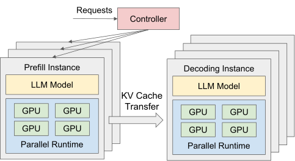
调度策略本身很简单：所有请求先进中心控制器，按先来先服务处理；先派给队列最短的 prefill 实例，prefill 完成后再派给负载最轻的 decode 实例。在此之上，作者针对真实负载做了几处改进。把一个请求在 DistServe 里经历的过程画成排队的视角，会更容易理解每一处改进针对的是哪一段：
- 减少流水线气泡。输入长短不一会让流水线的各段忙闲不均。作者注意到，无论 prefill 还是 decode，一个批里“新 token 的数量”都能很好地预示这批要算多久。所以对 prefill 实例，事先测出能把 GPU 算满的最短长度 \(L_{m}\)，让每一批的总 token 数尽量接近 \(L_{m}\)：短于 \(L_{m}\) 的请求几个拼一批，长于 \(L_{m}\) 的请求单独一批。对 decode 实例，把 \(L_{m}\) 设为最大批大小。这样每一批的执行时间大致相等，流水线就不容易出现空档。
- 应对突发流量：拉取而不是推送。流量突然变大时，大量 prefill 同时完成，如果 prefill 实例一算完就把 KV“推”给 decode 实例，decode 实例的显存可能被瞬间撑爆。DistServe 改成由 decode 实例在需要时主动去拉：prefill 实例算完后把 KV 留在自己的显存里，继续处理下一个 prefill；decode 实例腾出空间时再来取。prefill 卡的显存于是成了一个排队缓冲区，两种实例各自按自己的节奏工作，不需要复杂的协调。可以把它想成餐馆的出菜口：厨房做好的菜先放在出菜口，服务员有空就来端，厨房不用等服务员。
- 定期重新规划。放置方案是针对某一种负载特征优化的，负载变了就可能不再最优。DistServe 有一个负载监视器，跟踪平均输入输出长度、平均到达速率等参数；发现明显变化时，用最近的历史数据重新运行放置算法。算法本身几秒到几分钟就能跑完，重新加载模型权重也只要几分钟，而真实负载的变化通常以小时计，来得及。
- 没有实现的部分：抢占与容错。先来先服务会带来“护航效应”（convoy effect）：一个很长的 prompt 在 prefill 阶段挡住后面一串短请求。引入抢占式调度可以缓解，DistServe 的架构允许但没有实现。容错方面，拆分引入了新的风险：在复制部署的系统里，一个实例出故障不影响其他副本；但在 DistServe 里，一个 decode 实例可能对应多个 prefill 实例，它一出故障，上游的 prefill 实例都会受影响，故障会扩散。作者把这两点都留作以后的工作。
- 放置算法依赖“负载分布可以从历史记录里拟合出来”这个前提。分布突变时，在重新规划完成之前，系统运行在一个不再最优的配置上。
- “KV 传输可以忽略”是有条件的：要么有高速跨节点网络（算法 1），要么接受“同段同机”的约束（算法 2）。在既没有高速网络、又不满足这个约束的部署里，§3.3 的估算表明传输可能比 prefill 本身还慢。
- 论文 §4.3 说放置算法“几秒内”就能跑完，而 §6.5 的实测在 32 卡时约为一分多钟；两处说法量级不同，以 §6.5 的实测为准。
英文原文 §4 ↗ · 算法 1 ↗ · 算法 2 ↗ · 附录 A 延迟模型 ↗
5 实现：一个编排层，加一个自研的并行执行引擎
DistServe 是一个端到端的分布式推理系统，分四块：放置算法模块、RESTful API 前端、编排层、并行执行引擎。前三块用约 6.5K 行 Python 写成，执行引擎用约 8.1K 行 C++/CUDA 写成。
- 放置算法模块实现了第 4 节的两种算法和模拟器，针对给定的模型和集群输出放置方案。
- 前端提供兼容 OpenAI API 的接口，用户可以为每个请求指定最大输出长度、温度等采样参数。
- 编排层管理所有 prefill 和 decode 实例，负责派发请求、传输 KV 缓存、返回结果。跨节点的 GPU 通信用 NCCL；节点内用异步的 cudaMemcpy，这样传输时不会阻塞 GPU 上正在进行的计算。
- 并行执行引擎驱动每个实例。它用 Ray 的 actor 实现 GPU worker，由这些 worker 执行推理并以分布式的方式管理 KV 缓存；它集成了连续批处理、FlashAttention、PagedAttention 等当时常用的优化，支持 OPT 和 LLaMA 等开源模型。
按官方仓库的说明，这个执行引擎是一个名为 SwiftTransformer 的 C++ Transformer 推理库，支持张量并行和流水线并行；仓库列出的可运行模型包括 GPT-2、OPT 和 LLaMA-2 系列。也就是说，论文里的 DistServe 并不是在 vLLM 上加一层改出来的，而是一个独立的系统，实验中的对比对象 vLLM 是另一套代码。
6 实验：每张卡能多接多少请求，延迟要求能收多紧
6.1 实验是怎么设计的
机器。4 台机器、共 32 张 GPU。每台机器 8 张 A100-80GB（SXM），机内用 NVLink 互联；机器之间的带宽只有 25 Gbps。正因为跨节点带宽很低，除了用模拟器做的消融实验（§6.4），其余实验里 DistServe 都用低带宽放置算法（§4.2 的算法 2）。
模型。OPT-13B、OPT-66B、OPT-175B，全部用 FP16。作者解释了为什么选 OPT：较新的模型已经改用 GQA、MQA 这类节省 KV 的注意力，DistServe 在它们上面传输开销更低、表现会更好；OPT 用的是经典的多头注意力（MHA），KV 最大，能给传输施加足够的压力。
负载与延迟要求。作者挑了三类典型应用，各配一个数据集。论文说目前没有公开的 SLO 标准，所以这些要求是按各应用的服务目标凭经验定的：
| 应用 | 模型（权重大小） | TTFT 要求 | TPOT 要求 | 数据集 |
|---|---|---|---|---|
| 聊天机器人 | OPT-13B（26 GB） | 0.25 s | 0.1 s | ShareGPT |
| 聊天机器人 | OPT-66B（132 GB） | 2.5 s | 0.15 s | ShareGPT |
| 聊天机器人 | OPT-175B（350 GB） | 4.0 s | 0.2 s | ShareGPT |
| 代码补全 | OPT-66B（132 GB） | 0.125 s | 0.2 s | HumanEval |
| 摘要 | OPT-66B（132 GB） | 15 s | 0.15 s | LongBench |
数字来自原文表 1。
- 聊天机器人（ShareGPT，用户分享的与 ChatGPT 的对话）：13B 要求 TTFT 0.25 秒以保证响应及时，TPOT 0.1 秒，比常人阅读速度快；66B 和 175B 模型本身算得慢，要求相应放宽。
- 代码补全（HumanEval，164 道编程题，给出函数签名或文档字符串让模型补全）：作为实时编程助手，两个要求都很紧，尤其 TTFT 只有 0.125 秒。
- 摘要（LongBench 的摘要任务）：输入很长，所以 TTFT 放得很宽（15 秒），但 TPOT 要求紧。OPT 的位置编码最长只支持 2048 个 token，所以输入被截断到这个长度以内。
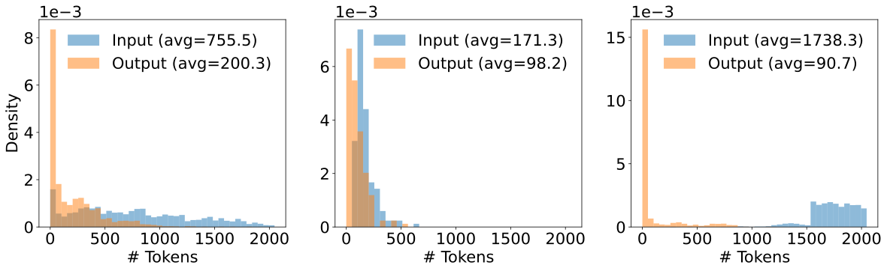
数据集都没有记录请求的到达时间，所以和 vLLM 论文一样，作者用泊松过程按不同的平均速率生成到达时间。限于篇幅，聊天负载在三个模型上都测了，另外两种负载只在 OPT-66B 上测。
和谁比。
- vLLM：用连续批处理和 PagedAttention 的代表性系统，两个阶段放在同一组 GPU 上。它当时只支持张量并行，作者按 vLLM 论文的做法，给三个模型分别设张量并行度 1、4、8。
- DeepSpeed-MII：支持 chunked prefill，把长 prompt 切块、再和短 prompt 拼起来，正好填满一个目标 token 预算。13B 和 66B 的张量并行度与 vLLM 相同。它跑不了 OPT-175B：它的内核要求“词表大小 ÷ 张量并行度”是 8 的倍数，OPT 的词表是 50272，除以 8 得 6284，不是 8 的倍数；改成张量并行度 4 虽然满足条件，却会显存不足。
后面的结果图每个子图都有两种画法，纵轴都是 SLO 达标率，水平灰色虚线是 90% 的目标：
- 横轴是“每张卡的请求速率”：固定延迟要求，逐渐加大请求速率。速率越高，超标的请求越多，达标率下降。曲线跌破 90% 的位置（图中的竖直虚线）就是这个系统每张卡的 goodput。竖线越靠右越好。
- 横轴是“SLO Scale”：固定请求速率，把表 1 里的两个要求同时乘上一个系数。系数越小，要求越严。曲线跌破 90% 的位置，就是这个系统能扛住的最严要求。横轴从左到右系数递减，所以同样是竖线越靠右越好。“收紧 12.6 倍”指的是两个系统能扛住的最小系数之比。
“每张卡”很关键：不同系统、不同配置用的卡数不同，比如 OPT-13B 上 vLLM 用 1 张卡，DistServe 的一对实例用 3 张卡（见下文表 3），所以都要把速率除以卡数再比。
6.2 端到端结果
聊天机器人。
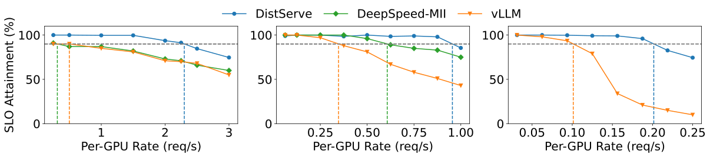
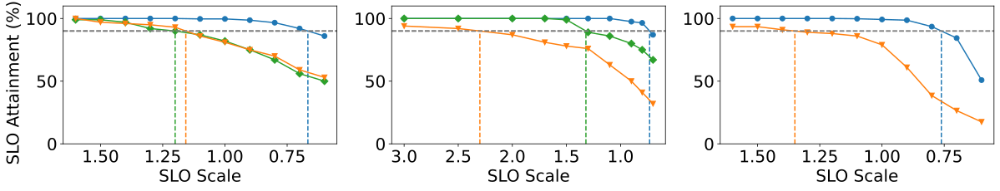
在 ShareGPT 上，DistServe 能承受的请求速率是 vLLM 的 2.0–4.6 倍，是 DeepSpeed-MII 的 1.6–7.4 倍。结合图 8 的读数可以看出，这两个区间的上端（4.6 倍和 7.4 倍）都出现在 OPT-13B 上，2.0 倍出现在 OPT-175B 上。作者的解释是：拆分消除了干扰，两个阶段又能各自分配资源、各选并行方式。
DistServe 实际选出的配置（论文附录表 3）很能说明问题：
| 模型 | 数据集 | prefill 实例 | decode 实例 |
|---|---|---|---|
| OPT-13B | ShareGPT | TP 2 × PP 1（2 张卡） | TP 1 × PP 1（1 张卡） |
| OPT-66B | ShareGPT / LongBench / HumanEval | TP 4 × PP 1（4 张卡） | TP 2 × PP 2（4 张卡） |
| OPT-175B | ShareGPT | TP 3 × PP 3（9 张卡） | TP 4 × PP 3（12 张卡） |
TP = 张量并行（算子内），PP = 流水线并行（算子间）。数字来自原文附录表 3。
可以看到，prefill 实例倾向于用更多的张量并行来压低 TTFT（13B 用 TP 2，比 decode 多一倍），decode 实例则更多地用流水线并行来扩容，和第 3 节的分析一致。OPT-175B 上 prefill 用 3 路张量并行、3 段流水线，decode 用 4 路张量并行、3 段流水线，作者说这种不对称、不“整齐”的配置很难靠人工找出来，这也是需要搜索算法的理由。
反观 vLLM：两个阶段放在一起，decode 被严重拖慢，TPOT 大幅上升。聊天应用的 TPOT 要求很紧，虽然 vLLM 让大多数请求满足了 TTFT，整体达标率还是被大量 TPOT 超标的请求拉了下来。DeepSpeed-MII 在大模型上表现更好，因为大模型的 prefill 更重，chunked prefill 能在一定程度上缓解干扰；但分块的 prefill 比完整的 prefill 慢（§2.3 的原因），它为了 TPOT 牺牲了 TTFT，难以满足 TTFT 要求。
在 SLO Scale 那一排，DistServe 能扛住的要求比 vLLM 严 1.8–3.2 倍，比 DeepSpeed-MII 严 1.7–1.8 倍。
代码补全与摘要。
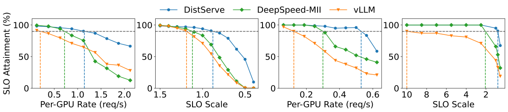
- 代码补全：DistServe 的请求速率是 vLLM 的 5.7 倍、DeepSpeed-MII 的 1.6 倍；能扛的要求比两者都严 1.4 倍。代码补全对 TTFT 的要求比聊天还紧，所以两边最终都卡在 TTFT 上。DistServe 的优势来自两点：去掉了 decode 对 prefill 的干扰，以及搜索算法自动给 prefill 实例加大了张量并行度，缩短了 prefill 的执行时间。
- 摘要：DistServe 的请求速率是 vLLM 的 4.3 倍、DeepSpeed-MII 的 1.8 倍；能扛的要求比 vLLM 严 12.6 倍、比 DeepSpeed-MII 严 2.6 倍。LongBench 的输入很长，prefill 压力很大；而摘要对 TTFT 很宽松、对 TPOT 很严，vLLM 在长 prefill 的干扰下 decode 被拖得最厉害，满足不了 TPOT。
把所有端到端结果放在一起（数字均来自论文正文与附录 C）：
| 负载（模型） | 比 vLLM：速率 | 比 vLLM：要求收紧 | 比 MII：速率 | 比 MII：要求收紧 |
|---|---|---|---|---|
| 聊天 ShareGPT（13B / 66B / 175B） | 2.0–4.6× | 1.8–3.2× | 1.6–7.4× | 1.7–1.8× |
| 代码补全 HumanEval（66B） | 5.7× | 1.4× | 1.6× | 1.4× |
| 摘要 LongBench（66B） | 4.3× | 12.6× | 1.8× | 2.6× |
| 以上全部，改用 99% 达标率目标 | 3–8× | 1.24–6.67× | 1.32–8× | 1.20–1.58× |
附录 C 把达标率目标从 90% 提高到 99% 重做了一遍：请求速率的倍数（对 vLLM 3–8 倍）比 90% 目标时更大，SLO 收紧倍数的上限则从 12.6 倍降到 6.67 倍。速率优势在更严的目标下变大，一种可能的解释是（本站推测）：拆分消除的正是那些造成延迟“长尾”的干扰事件，达标率要求越接近 100%，长尾越要紧。
- 摘要里的“7.4 倍的请求”和“12.6 倍的 SLO”不是同一个实验、也不是和同一个对手比的：7.4 倍是聊天负载、OPT-13B 上对 DeepSpeed-MII；12.6 倍是摘要负载、OPT-66B 上对 vLLM。和 vLLM 比，请求速率的倍数在 2.0–5.7 倍之间。
- 12.6 倍是所有结果里最极端的一个。它出现在“输入很长 + TPOT 很严”的组合上，正是混合部署受干扰最重的情形；而且 vLLM 的达标点落在测试范围的边缘（SLO Scale 10），这个倍数对测试范围比较敏感。
- vLLM 的配置是按 vLLM 论文固定的张量并行度，并非为每个负载单独调优；§6.4 用模拟器补做了“给 vLLM 搜索最优并行度”的对照。
- 所有实验用的是 MHA 结构的 OPT 和 25 Gbps 的跨节点网络，DistServe 用的是受约束的算法 2。换成 GQA 模型或高速网络，传输压力会更小。
6.3 延迟分解：时间都花在哪了，KV 传输占多少
为了看清 DistServe 内部的情况，作者把一个请求的生命周期分成五段：prefill 排队、prefill 执行、传输、decode 排队、decode 执行（就是 §4.3 示意图里的 ①–⑤），把所有请求在每一段花的时间加起来，算出各段占总时间的比例。
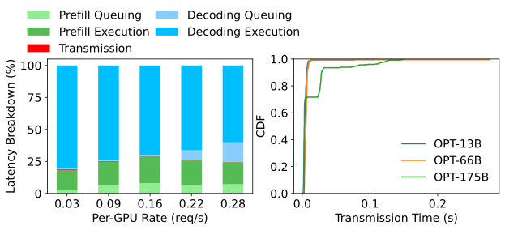
作者特意选了 OPT-175B，因为模型越大，每个 token 的 KV 越大（推算：\(2\times 96\times 12288\times 2\) 字节，约 4.7 MB），传输压力越大。结果是，即使对 OPT-175B，KV 传输也只占总延迟的不到 0.1%；超过 95% 的请求传输时间在 30 毫秒以内，尽管测试床的跨节点带宽只有 25 Gbps。原因正是算法 2：同一段的 prefill 和 decode 放在同一台机器上，KV 只走 NVLink。
这个结论和 §3.3 的估算并不矛盾。§3.3 说 25 Gbps 上传一个 OPT-66B 请求要几百毫秒，那是 KV 走跨节点网络的情形；DistServe 的放置算法恰恰保证了 KV 不走跨节点网络。另外，传输时间是一次性的，而一个请求的 decode 动辄几百步、每步上百毫秒，总延迟主要由 decode 决定，所以哪怕有几十毫秒的传输，占比也很小。
6.4 消融实验：拆分和放置算法各自贡献多少
消融实验要回答两个问题。第一，DistServe 的优势是否只是因为它搜索了并行配置，而 vLLM 用的是默认配置？为此作者实现了“vLLM++”：为 vLLM 枚举不同的并行策略，选最好的。第二，低带宽约束（算法 2）让 DistServe 损失了多少？为此比较算法 2 找到的方案（DistServe-Low）和不受约束、假设跨节点带宽很高的算法 1 找到的方案（DistServe-High）。由于 vLLM 不支持流水线并行、测试床也没有高速跨节点网络，这组实验用模拟器完成。
先验证模拟器准不准。作者在测试床上实际运行 vLLM 和 DistServe-Low，在不同速率下比较真实达标率与模拟器预测的达标率：
| 速率（个/秒） | vLLM 实测 | vLLM 模拟 | DistServe-Low 实测 | DistServe-Low 模拟 |
|---|---|---|---|---|
| 1.0 | 97.0% | 96.8% | 100.0% | 100.0% |
| 1.5 | 65.5% | 65.1% | 100.0% | 100.0% |
| 2.0 | 52.8% | 51.0% | 99.3% | 99.3% |
| 2.5 | 44.9% | 46.1% | 87.3% | 88.3% |
| 3.0 | 36.7% | 38.3% | 83.0% | 84.1% |
| 3.5 | 27.8% | 28.0% | 77.3% | 77.0% |
| 4.0 | 23.6% | 24.1% | 70.0% | 68.9% |
数字来自原文表 2。论文没有写明这组测量用的是哪个模型和负载。
所有情况下误差都小于 2%。这张表也可以当作 goodput 定义的练习来读：按 90% 的目标，vLLM 在每秒 1.0 个请求时还达标（97.0%），到 1.5 个就跌到 65.5%，所以它的 goodput 落在 1.0 到 1.5 之间；DistServe-Low 在 2.0 时还有 99.3%，到 2.5 跌到 87.3%，goodput 落在 2.0 到 2.5 之间。要得到更精确的值，就得在区间里继续二分，这正是算法里“二分搜索”那一步在做的事。
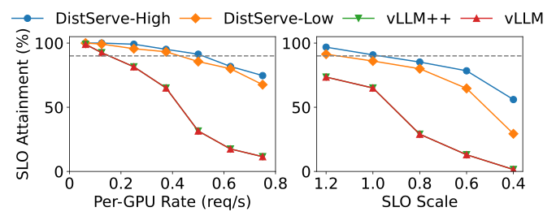
两个结论。第一，vLLM++ 和 vLLM 一模一样：搜索下来，vLLM 默认的张量并行度 4 本来就是每张卡 goodput 最高的配置。这说明在混合部署下，两个阶段的干扰让“调并行配置”这件事几乎没有提升空间，DistServe 的优势主要来自拆分本身。第二，DistServe-High 比 DistServe-Low 还能再好一些，因为它不受“同段同机”的约束，prefill 和 decode 可以各自完全自由地选配置。
6.5 放置算法要跑多久
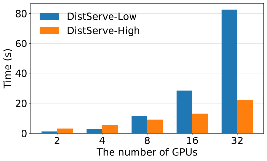
算法的运行时间随 GPU 数增长，但与模型大小无关，因为模拟器只模拟离散事件，模型多大都一样快。两种算法都容易并行：不同并行配置的搜索互不依赖，CPU 核越多跑得越快，几乎线性加速。GPU 多了以后，算法 2 比算法 1 慢，因为算法 1 里 prefill 和 decode 的搜索互相独立、可以并行进行，而算法 2 受部署约束，必须枚举两者在机内的所有组合。即便如此，运行时间也在分钟级，而且每次重新部署前只需要跑一次，可以接受。
7 讨论：什么情况下不该拆，什么情况下更该拆
- 只追求吞吐量的场景。离线批处理之类的应用对响应时间要求很低，系统的目标从 goodput 回到吞吐量，DistServe 的优势会打折扣。这时 chunked prefill 加捎带 decode 的做法可能更合适，因为它能把每一批都填到算力受限的程度，让每次迭代的 GPU 利用率都更高。这与 goodput 的定义是一致的：没有延迟要求，就没有“超标”，干扰也就无所谓了。
- 资源受限的场景。小公司和个人研究者往往只有几张甚至一张 GPU。卡太少时，DistServe 能调的并行配置和资源分配空间非常有限，甚至无从下手。这时不拆分的系统（比如 vLLM、DeepSpeed-MII）部署更简单，运维也更省事。
- 长上下文场景。当时已有支持百万 token 上下文的模型（论文举了 Claude 3、Gemini 1.5、Large World Model）。上下文越长，KV 缓存越大，传输量随 prompt 长度线性增长；但 prefill 的计算量里注意力那部分随长度平方增长，所以传输时间相对于 prefill 时间反而越来越小。同时，长上下文让 prefill 和 decode 的计算需求差距更大，混在一起时干扰更严重。所以作者认为拆分在长上下文服务里依然很有前景。这与 §3.3 推出的“所需带宽 ≈ 算力 ÷ 6h”一致：那个估算忽略了注意力的平方项，算上它，长 prompt 对带宽的要求只会更低。
8 相关工作与结论
论文把相关工作分成四类。
推理服务系统。既有 TorchServe、NVIDIA Triton 这类通用的生产级系统，也有专门为 Transformer 大模型优化的系统。其中 Orca 提出连续批处理以提高吞吐，vLLM 提出 PagedAttention 做细粒度的 KV 缓存管理，Sarathi 提出 chunked prefill 并把 decode 捎带进去以提高硬件利用率，FastServe 用迭代级的抢占式调度减少长任务造成的排队。它们都把 prefill 和 decode 放在一起处理，所以都有严重的干扰。同期也有几项工作采用了类似的拆分思路：Splitwise、TetriInfer 和 DéjàVu，作者认为这进一步说明了拆分的有效性；DistServe 的不同之处是更强调 goodput 优化，并且专门考虑了网络带宽。
以 goodput 为目标的系统。Pollux 在深度学习训练集群里动态调整每个作业的资源以提高集群级 goodput；Sia 针对异构集群做调度；Clockwork 和 Shepherd 提供延迟感知的调度和抢占来提高推理 goodput，但面向的是传统的小模型；AlpaServe 面向大模型，用模型并行做统计复用来提高资源利用率，但只针对非自回归的生成。作者称 DistServe 是第一个为自回归大模型推理优化 goodput 的工作。
资源解耦。数据中心领域早有“把 CPU、内存等硬件从整机里拆出来、组成资源池独立管理”的研究，好处是部署更灵活、利用率更高。DistServe 借用了同样的理念，只不过拆的是系统组件（两个计算阶段），让它们能独立扩缩。
训练中的模型并行。DistServe 与大量研究训练并行的工作是正交的。推理负载有训练里没有的特点（§3.3 的长度不一、KV 传输），两者的交集在于并行的实现方法，DistServe 可以把新的并行优化纳入它的放置搜索。
结论。DistServe 把 prefill 和 decode 拆到不同的 GPU 上，以每张卡的 goodput 为目标，自动选择两个阶段各自的并行配置和资源分配，并按集群带宽放置实例。在保证达标率的前提下，单个请求的成本最多可降到原来的 1/7.4（即 goodput 最多提高 7.4 倍）。作者的判断是：随着延迟成为大模型服务越来越重要的指标，拆分 prefill 和 decode 会是提升性能和保证服务质量的关键策略。
后来怎么样了
作者的判断后来基本应验了：prefill/decode 分离（常简称 PD 分离）从一个学术提议，变成了大规模推理服务的常规做法。下面只列能查证的事实。
两篇最常被并列提起的工作。
- Splitwise（微软，arXiv 2023-11，ISCA 2024）：与 DistServe 同期提出把“处理 prompt”和“生成 token”两个阶段放到不同的机器池上，并利用两个阶段对硬件需求的差异，为每个阶段选用更合适的硬件（例如不同代的 GPU）。论文摘要报告：与现有设计相比，吞吐提高 1.4 倍、成本降低 20%；或者在相同的成本和功耗预算下，吞吐提高 2.35 倍。DistServe 的相关工作一节把它列为同期工作。
- Mooncake（月之暗面 Kimi 与清华大学，arXiv 2024-06，FAST 2025 最佳论文）：Kimi 线上服务的架构。它同样把 prefill 和 decode 拆成两个集群，并把集群里闲置的 CPU 内存、SSD 和网卡汇成一个分布式的 KV 缓存池，以 KV 缓存为中心做调度。论文摘要报告：在部分模拟场景中吞吐最多提升 525%，在真实负载下让 Kimi 多处理 75% 的请求。它的 KV 传输引擎后来成了 SGLang 和 vLLM 的传输后端之一。
进入主流推理引擎与生产部署。
- vLLM 提供“disaggregated prefilling”功能，文档标注为实验性，支持 NixlConnector、LMCache、MooncakeConnector 等多种 KV 传输连接器。它的文档特别说明：这个功能不提高吞吐量，作用是让 TTFT 和 ITL（相邻 token 间隔）可以分别调优、并更可靠地控制 ITL 的尾延迟。这几乎就是 DistServe 的核心论点：分离优化的是满足延迟要求的能力，而不是原始吞吐。
- SGLang 提供 PD 分离部署，传输引擎支持 Mooncake 和 NIXL。它的文档给出的动机与 DistServe 一致：新来的 prefill 批经常打断正在进行的 decode 批，造成明显的出字延迟。
- NVIDIA Dynamo 是一个架在 SGLang、TensorRT-LLM、vLLM 之上的多节点编排层，把“把 prefill 和 decode 分到可以独立扩缩的 GPU 池”列为核心功能。NVIDIA 2025-12-17 的一篇博客写道，Dynamo 等生产推理平台用到了源自 Hao AI Lab 的研究概念，其中包括 DistServe。
- DeepSeek-V3 技术报告（2024-12）描述的线上部署同样把 prefill 和 decode 分开：prefill 的最小部署单元是 4 个节点 32 张 GPU，decode 的最小部署单元是 40 个节点 320 张 GPU。两边规模相差十倍，正说明两个阶段的资源需要分别配置。
作者自己的回顾。2025-11-03，Hao AI Lab 发表博客《Disaggregated Inference: 18 Months Later》（作者 Junda Chen、Yonghao Zhuang、Hao Zhang）。文中回顾说，DistServe 在 2024 年起初受到开源社区的质疑、采用很少，主要原因是拆分需要大量重构现有系统；到 2025 年，随着企业越来越看重延迟控制、模型和流量扩大到成百上千张 GPU，拆分成了几乎所有主流推理栈的默认做法。博客列举了编排层（NVIDIA Dynamo、llm-d、Ray Serve LLM）、存储层（LMCache、Mooncake）和推理引擎（SGLang、vLLM、TensorRT-LLM）。它也提到下一步的方向：把注意力和前馈层进一步拆开（attention-FFN disaggregation，目前只在 MoE 模型上验证过），以及用异构硬件分别承担不同阶段。
在本站可以接着读：
- PD 分离结构拆解：DistServe、Splitwise、Mooncake 三篇的对照表，带 KV 传输计算器和简答题。
- Orca / Sarathi-Serve：连续批处理与 chunked prefill，即“不拆分、在一组 GPU 上控制干扰”的另一条路线。
- KV 缓存分层存储：Mooncake 之后，把 KV 缓存放到 CPU 内存、SSD 乃至远端存储的工作。
- vLLM 精读：本文的主要对照系统，也是两阶段、KV 缓存和连续批处理这些概念的出处。
作者
单位按论文署名。背景只列可公开查证的信息：作者主页、实验室与机构页面、公开报道。
影响力
- 引用：见页首（Semantic Scholar 快照）。
- 发表：OSDI 2024（第 18 届 USENIX 操作系统设计与实现研讨会，系统领域顶级会议）。arXiv 首版 2024-01-18，最新的 v3 发布于 2024-06-06（本页依据 v3）。
- 开源：LLMServe/DistServe 仓库 844 个 star、99 个 fork（截至 2026-10-19），Apache-2.0 许可；执行后端为 SwiftTransformer。仓库最近一次提交在 2025-04。
- 采用：PD 分离已进入 vLLM（实验性功能）、SGLang、NVIDIA Dynamo，DeepSeek-V3 的线上部署也采用了分离的 prefill 与 decode（出处见上一节“后来怎么样了”）。这些系统的实现各不相同，并非直接使用 DistServe 的代码。
延伸阅读
- 相关精读：SGLang、DeepSeek-V3
- PD 分离结构拆解：数据流架构图、三篇论文对照、KV 传输计算器、简答题。
- 推理基础：roofline 与两个阶段：本文 §2.1 背景的展开版。
- Megatron：张量并行与流水线并行的细节。
- Orca / Sarathi-Serve：连续批处理与 chunked prefill。
- KV 缓存分层存储：LMCache、Strata 等。
- vLLM / PagedAttention 精读
- 返回论文书架
原文：Yinmin Zhong, Shengyu Liu, Junda Chen, Jianbo Hu, Yibo Zhu, Xuanzhe Liu, Xin Jin, Hao Zhang. DistServe: Disaggregating Prefill and Decoding for Goodput-optimized Large Language Model Serving. OSDI 2024. arXiv:2401.09670，以 CC BY-SA 4.0 许可发布。 本页标注“原文图”的图片取自 arXiv HTML 版（v3）原文，未做修改，依 CC BY-SA 4.0 使用并署名；图注为本站撰写。其余文字与示意图为本站撰写的精读笔记，并非翻译。数字与结论以原文为准。